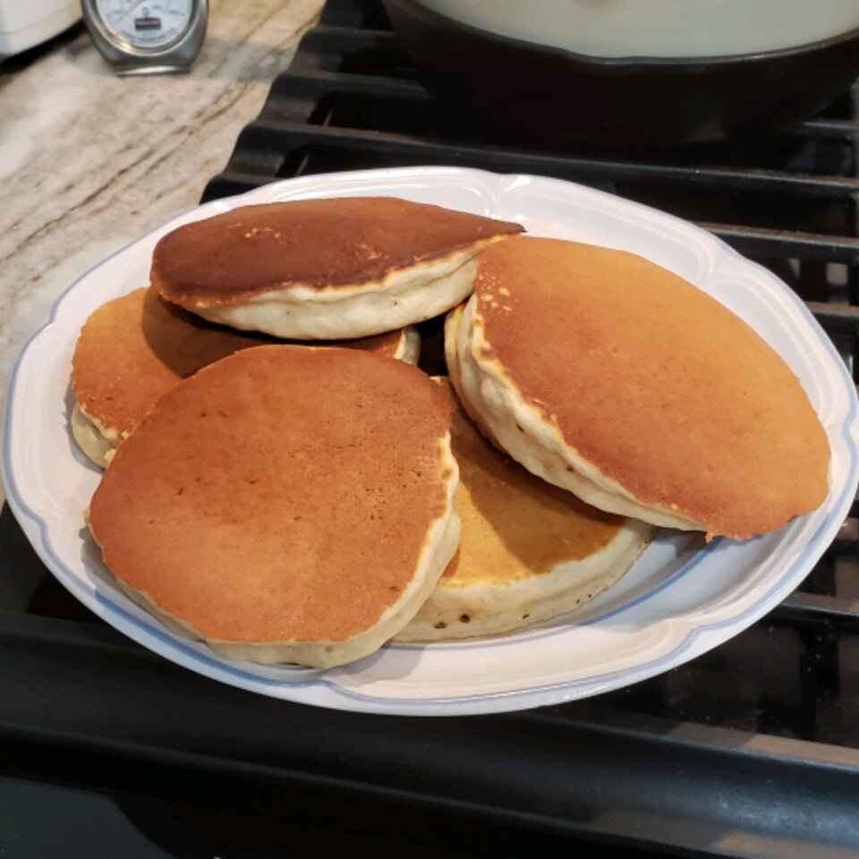

Pancakes

Description
This is a peanut buttery take on one of the greatest breakfast foods around
Ingredients
Dry Ingredients:
- 1 1/2 cups all-purpose flour
- 2 tablespoons baking powder
- 1 tablespoon white sugar
- 1/2 teaspoon salt
Wet Ingredients:
- 1 1/4 cups milk
- 1/3 cup smooth peanut butter
- 1 egg
- 1 tabelspoon canola oil
- 1 teaspoon vanilla extract
Directions:
- Preheat a griddle to medium heat.
- Whisk flour,baking powder,sugar, and salt together in a mixing bowl. Combine milk, peanut butter, egg, canola oil, and vanilla extract in a seperate bowl; pour into the flour mixture and whisk together until thoroughly mixed
- Ladle batter in 1/4 cup portions onto hot griddle. Cook until tiny air bubbles form on top, 2 to 5 minutes; flip and continue cooking until the bottoms are browned, 2 to 3 minutes. Repeat with remaining batter. Keep finished pancakes warm.